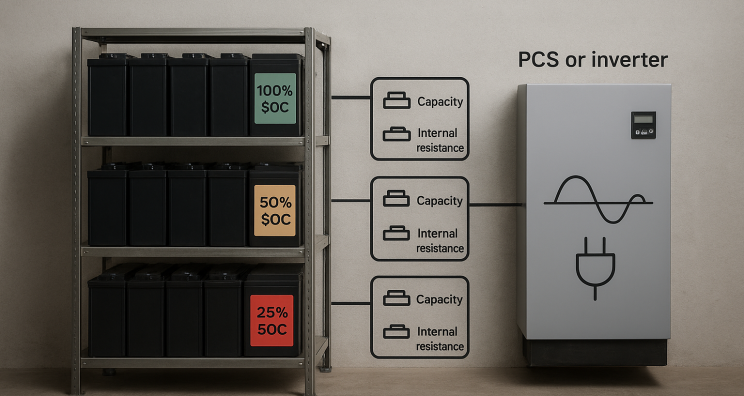
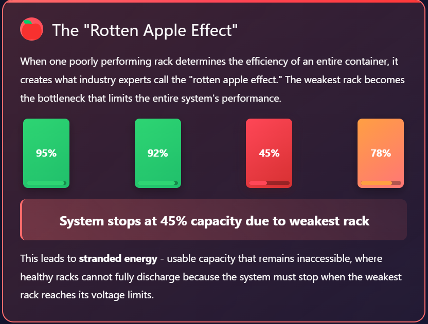
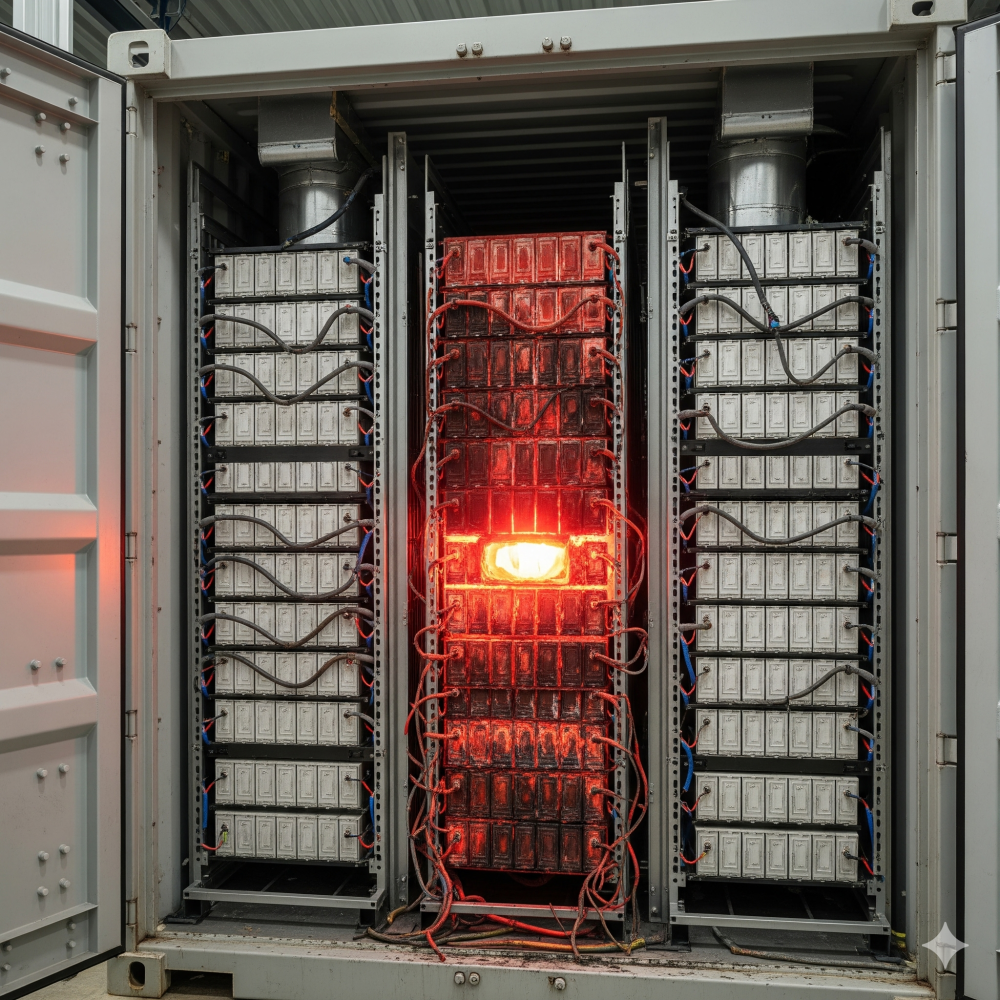
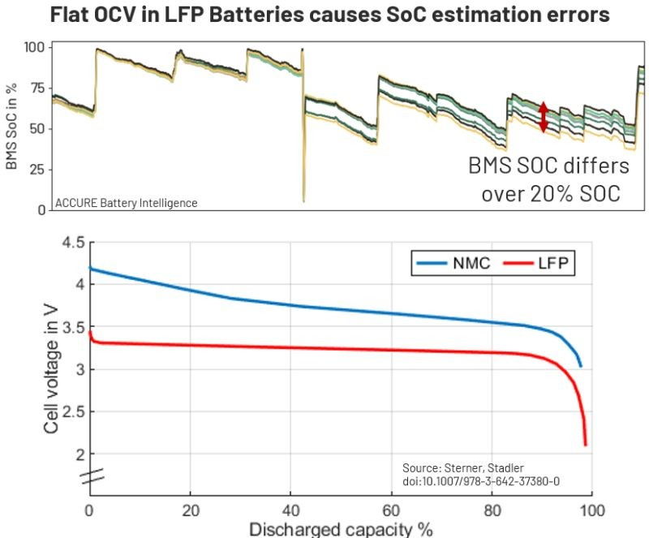
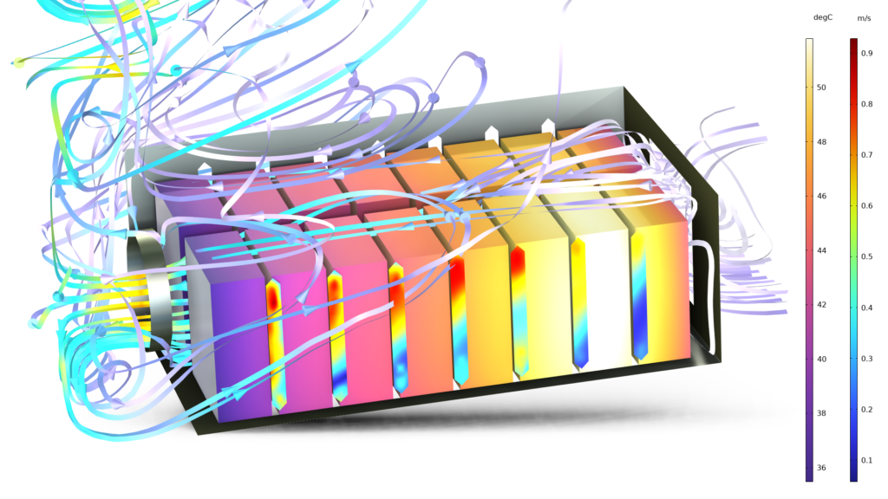
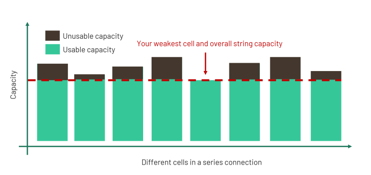
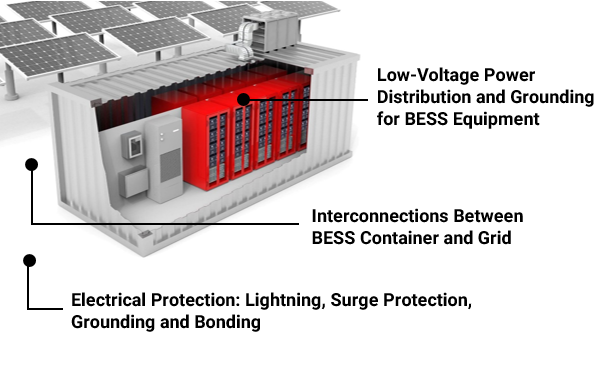
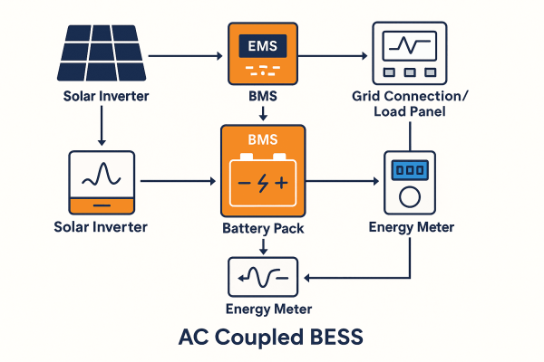
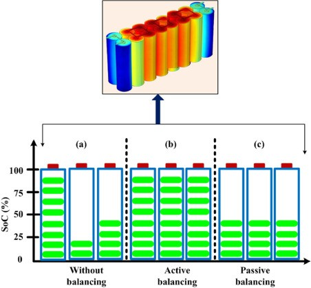

Rack imbalance in Battery Energy Storage Systems (BESS) occurs when individual battery racks connected to the same Power Conversion System (PCS) or inverter exhibit different operational characteristics, particularly varying State of Charge (SOC) levels, capacities, or internal resistances. This condition represents a critical operational challenge that extends beyond individual cell imbalances to encompass entire rack-level disparities within large-scale energy storage installations.
In modern BESS facilities, which comprise hundreds of thousands of battery cells organized into modules and racks, perfect synchronization is essential for optimal performance. When racks fail to operate in harmony, the resulting imbalance creates a cascade of operational issues that can significantly impact system efficiency, safety, and revenue generation.

Why Rack Imbalance Matters in BESS Operations
Performance and Revenue Impact
Rack imbalance creates what industry experts call the "rotten apple effect," where one poorly performing rack determines the efficiency of an entire container. When some racks reach their voltage limits before others, the entire battery string or container must stop charging or discharging prematurely. This leads to stranded energy - usable capacity that remains inaccessible, directly reducing revenue potential.
The financial implications are substantial. Industry data suggests that unaddressed imbalances can reduce site revenue by more than 10%, a particularly concerning figure in volatile energy markets. This revenue loss occurs through decreased capacity utilization, where the storage system operates below its full potential and generates less income from energy arbitrage and grid services.

Safety Implications
Rack imbalance poses serious safety risks that extend beyond performance degradation. Extreme cases can lead to individual cells discharging below critical voltage thresholds (1.5V) without detection by the Battery Management System (BMS). Such conditions trigger copper dissolution, one of the strongest precursors to thermal runaway in lithium-ion batteries.
The safety concerns are compounded when imbalanced racks experience differential heating under load, creating hot spots that accelerate aging and, in rare scenarios, can initiate thermal runaway conditions. This uneven thermal stress not only creates immediate safety hazards but also contributes to long-term degradation patterns.
Asset Longevity and Degradation
Rack imbalance accelerates uneven aging across all racks in a container, effectively reducing the entire system's service life to match that of its weakest components. Battery cells that consistently hit voltage limits first often spend more time at maximum or minimum voltage levels, accelerating their degradation process.
This degradation pattern creates a vicious cycle where imbalanced racks become progressively weaker, exacerbating the overall system imbalance over time. The result is a shortened operational lifetime for the entire BESS installation, undermining the long-term return on investment.

Primary Causes of Rack Imbalance
Manufacturing Variations and Quality Control Issues
Manufacturing inconsistencies represent one of the fundamental causes of rack imbalance. Even with advanced production techniques, slight variations in cell capacity, internal resistance, and electrochemical properties occur during manufacturing. These minute differences, while seemingly negligible initially, compound over time to create significant performance disparities.
Modern manufacturers often guarantee only a "minimum" capacity for their cells, giving them freedom to ship any cell that meets or exceeds this threshold. This practice has resulted in some customers receiving batches with more than 6% capacity variance, virtually guaranteeing operational imbalances from system startup.
State of Charge Estimation Errors
SOC estimation errors present a particularly complex challenge in rack imbalance management. These errors can stem from actual SOC disparities between racks or from estimation inaccuracies in the BMS. The challenge is especially pronounced with Lithium Iron Phosphate (LFP) batteries due to their characteristically flat open-circuit voltage (OCV) curve.

The BMS typically calculates SOC using either Coulomb counting methods or voltage-based algorithms. Coulomb counting accumulates errors during extended periods without full charge/discharge cycles, while voltage-based methods struggle with temperature and aging-related OCV variations. For LFP systems, small voltage measurement errors can cause substantial SOC estimation distortions due to the flat voltage profile.
Transportation and Storage-Related Imbalance
The global nature of battery supply chains introduces additional imbalance factors. With 85% of batteries produced in China, they typically spend several months traveling by truck and freighter before installation. During this extended transportation and storage period, lithium-ion cells naturally self-discharge at rates up to 3% per month.
Project delays further exacerbate this issue. Transformer shortages, grid interconnection delays, or permitting hurdles can extend storage periods by many months. During these idle periods, cells continue to self-discharge at different rates, causing progressive drift from their initial balanced state.
Temperature Variations and Thermal Management
Uneven heat distribution within BESS installations creates localized temperature gradients that contribute to rack imbalance. Poor thermal management, inadequate cooling system design, or variations in airflow can cause some racks to operate at different temperatures than others.

These temperature variations affect cell performance characteristics, including internal resistance, capacity, and self-discharge rates. Racks operating at elevated temperatures typically experience faster degradation and different electrochemical behavior, gradually developing imbalances relative to cooler racks in the same system.
Aging and Cycling History Differences
Different operational histories between racks contribute to progressive imbalance development. Racks experiencing higher utilization rates, more frequent cycling, or exposure to extreme operating conditions age at accelerated rates compared to those with lighter duty cycles.

This differential aging manifests as variations in available capacity, internal resistance, and SOC retention capabilities. Over time, these accumulated differences create increasingly pronounced imbalances that require active management to maintain system performance.
Electrical and Connection Inconsistencies
Variations in electrical connections, contact resistance, and wiring can create subtle but persistent imbalances between racks. Poor connections increase resistance, affecting charging and discharging efficiency. These electrical inconsistencies can cause some racks to receive or deliver slightly different current levels, leading to gradual SOC drift over time.

Connection quality issues often manifest during system commissioning or develop over time due to thermal cycling, vibration, or corrosion. Regular maintenance and inspection protocols are essential to identify and address these electrical inconsistencies before they contribute to significant imbalances.
Detection and Monitoring Strategies
Advanced Analytics and Early Warning Systems
Modern BESS installations employ sophisticated monitoring systems capable of detecting rack imbalances from their inception. These systems utilize advanced analytics platforms that combine expertise in battery electrochemistry and data science to identify subtle deviations that might escape conventional monitoring approaches.
The monitoring systems track multiple parameters simultaneously, including individual rack SOC profiles, voltage behaviors under load, temperature distributions, and current flow patterns. By analyzing these data streams in real-time, the systems can detect the onset of imbalance conditions and provide early warning alerts to operators.
Battery Management System Integration
The BMS plays a crucial role in rack imbalance detection by continuously monitoring voltage levels across all racks connected to each PCS. However, effective imbalance detection requires more than simple voltage monitoring, particularly for LFP systems where voltage variations may not accurately reflect SOC differences.

Advanced BMS implementations incorporate sophisticated algorithms that account for temperature effects, aging patterns, and historical performance data to provide more accurate imbalance detection. These systems can differentiate between actual imbalances and measurement artifacts, enabling more targeted corrective actions.
Correction and Prevention Methods
Calibration and Recalibration Procedures
For imbalances caused by SOC gauge drift, the solution often involves straightforward recalibration of the gauges across racks connected to the same PCS. This process requires temporarily equalizing all racks to a known reference state, then resetting the SOC calculations to eliminate accumulated estimation errors.
Regular calibration schedules should be established based on system utilization patterns and manufacturer recommendations. High-utilization systems may require more frequent calibration to prevent significant drift accumulation.
Active Balancing Techniques
Active balancing represents a more sophisticated approach to managing rack imbalances by physically redistributing energy between racks rather than simply dissipating excess charge. Unlike passive balancing, which wastes energy as heat, active balancing can transfer charge from higher-SOC racks to lower-SOC racks, improving overall system efficiency.

Active balancing systems can support significantly higher current levels (up to 6A compared to 0.25A for passive systems) and can operate during both charging and discharging cycles. This capability provides more flexibility in corrective actions and enables faster rebalancing when imbalances are detected.
Preventive Maintenance Programs
Comprehensive preventive maintenance programs are essential for preventing rack imbalance development. These programs should include regular thermal imaging to identify temperature variations, electrical testing to verify connection integrity, and BMS calibration to maintain accurate SOC estimation.
Key preventive maintenance activities include cleaning and environmental control to prevent dust accumulation, regular firmware updates to incorporate improved algorithms, and systematic monitoring of key performance indicators to identify trends before they become problematic.

Design and Procurement Considerations
Preventing rack imbalance begins during system design and procurement phases. Establishing strict, enforceable acceptance criteria for cell quality and verifying factory acceptance test results can significantly reduce initial imbalance potential.
Battery system selection should prioritize advanced balancing capabilities and user-friendly management interfaces. Understanding the specific balancing limitations of each system before procurement enables better long-term imbalance management strategies.
Conclusion
Rack imbalance in BESS represents a multifaceted challenge that requires comprehensive understanding and proactive management strategies. The causes range from fundamental manufacturing variations to complex operational factors including SOC estimation errors, environmental conditions, and aging patterns. The consequences extend beyond simple performance degradation to encompass safety risks, accelerated aging, and significant revenue impacts.